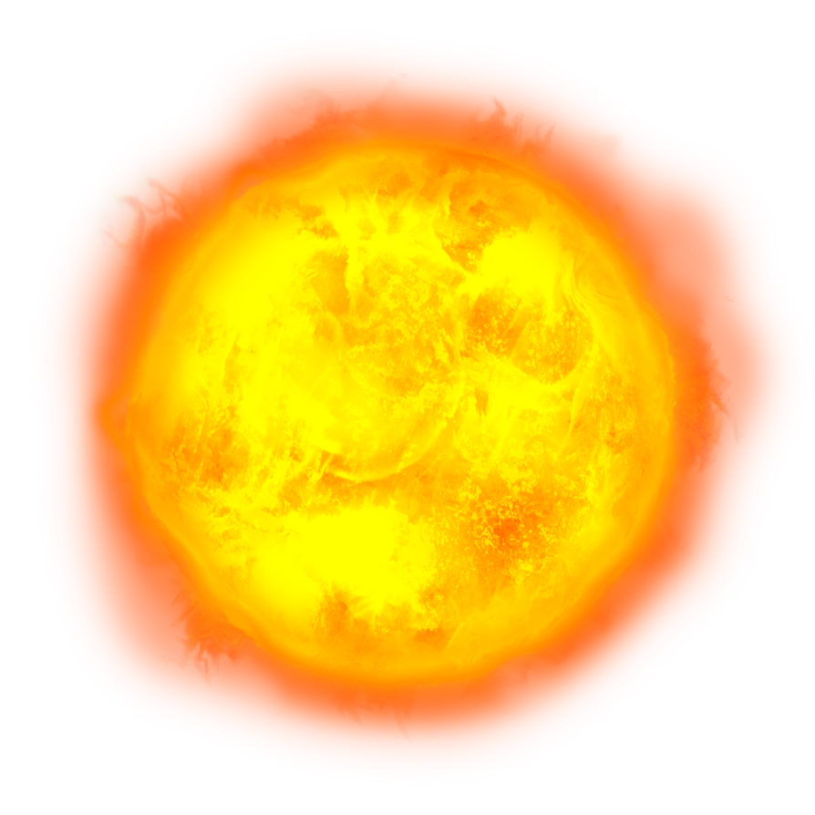
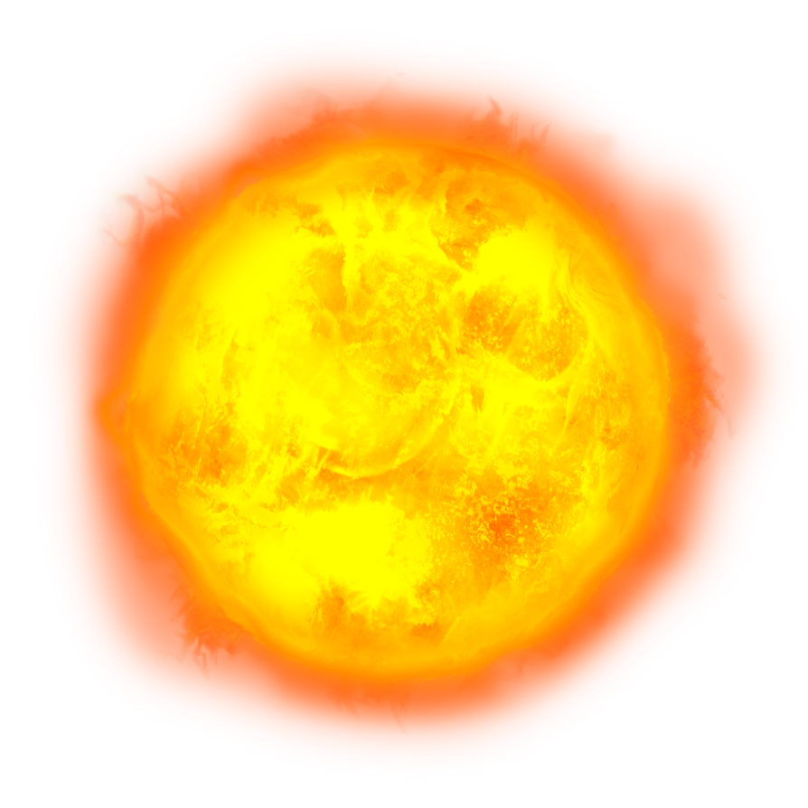

OuterSpacing
探索、漫遊我們身邊的大小星球
旅程
開始
開始

1 太陽
太陽是位於太陽系中心的恆星，質量四分之三是氫，剩下幾乎都是氦氣。它的能量主要來自內部氫融合成氦的核融合反應。
絕對星等為 +4.
83，光線為白色，但地表觀測時因大氣層折射，呈現黃色，為地球上觀測上最亮的星體，視星等為 -26.74。
與地球距離約1.496×10 公里，光速約8分19秒。
主要構成（由內自外）：
絕對星等為 +4.
83，光線為白色，但地表觀測時因大氣層折射，呈現黃色，為地球上觀測上最亮的星體，視星等為 -26.74。
與地球距離約1.496×10 公里，光速約8分19秒。
主要構成（由內自外）：
內核
輻射層
對流層
大氣層
2 四季
季節是每年循環出現的地理景觀相差比較大的幾個時間段。不同的地區，其季節的劃分也是不同的。
對溫帶地區而言，一年分為四季，即春季、夏季、秋季、冬季；在這些季節裡又分為四季，即溫季、熱季、涼季、寒季；而對於赤道地區只有旱季和雨季，或無季相之分。
在兩極地區，並非只有冬季，但春秋季不明顯，以北極為例，五月到九月為夏季，十月到隔年四月為冬季。


3 月亮
月球，是地球唯一的天然衛星，也太陽系中第五大的衛星，直徑是地球的1/4，質量是地球的1/81。
它的表面非常黑暗，但它仍是天空中除了太陽之外最亮的天體。
月球是第一個人類曾經登陸過的地外星球—1959年，美國NASA的阿波羅計畫是到目前為止「唯一實現的」載人登月任務。
而月球表面布滿了無數個坑洞，科學家根據從月球帶回的岩石作檢驗，推測月球在45億~~38億年前，曾受到許多巨大隕石的撞擊，因此在月球表面上留下了無數的隕石坑。另外有些坑洞則是火山爆發所造成的。
月球是第一個人類曾經登陸過的地外星球—1959年，美國NASA的阿波羅計畫是到目前為止「唯一實現的」載人登月任務。
而月球表面布滿了無數個坑洞，科學家根據從月球帶回的岩石作檢驗，推測月球在45億~~38億年前，曾受到許多巨大隕石的撞擊，因此在月球表面上留下了無數的隕石坑。另外有些坑洞則是火山爆發所造成的。
4 陰晴圓缺

朔月
初
一
一
初一
初五
初八
十一
十五
十九
廿二
廿六
 
